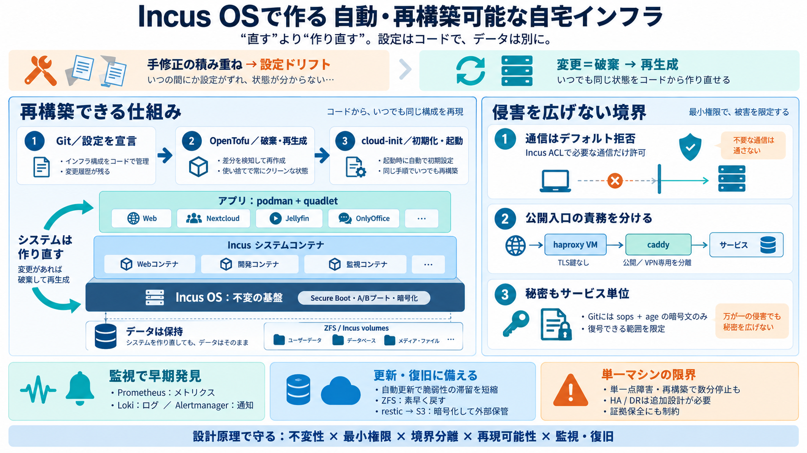

Incus OS: I built a cluster without ever opening the UI
The Incus engine itself moves fast. In 2026 alone: 7.0 LTS in May brought OCI image support and a built-in S3 listener, …

The Incus engine itself moves fast. In 2026 alone: 7.0 LTS in May brought OCI image support and a built-in S3 listener, …
Linux containers logo Menu Close menu IncusOS Introduction Go to Table of Contents # What's IncusOS?¶ IncusOS is …
## Repository files navigation # Introduction IncusOS is an immutable OS image dedicated to running Incus. It's based …
If you want Incus daemon to always start with some static environment variables, like `_proxy`, you can use `Environment…
You can set your own Secure Boot keys. The history of outrageous security vulnerabilities that break it is long and stor…